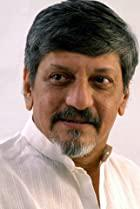
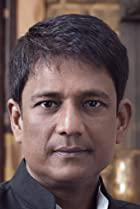
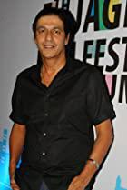
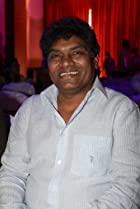
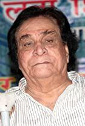
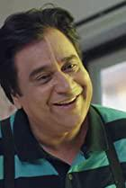
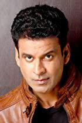
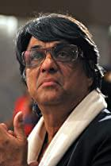
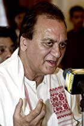

| 0 |
1. |
Aamir Khan |
|
Taare Zameen Par |
Aamir is no doubt one of the most dedicated actors in this world. With his recent success in India and China markets combined he has got the title of World's Biggest Superstar. He went through rapid transformations in his body structure for his films to bring out the reality factor in his ... |
Actor |
| 1 |
2. |
Akshay Kumar |
|
Hera Pheri |
Akshay Kumar, born September 9, 1967, is an actor. He studied martial arts in Hong Kong. It was a student that suggested that he try modeling. Because of his success as model, he was offered films. Along with his good looks and excellent martial art skills, he was always the first choice to do ... |
Actor |
| 2 |
3. |
Ajay Devgn |
|
Shivaay |
Ajay Devgn is an Indian film actor, director, and producer. He made his film debut with Phool Aur Kaante in 1991 and received a Filmfare Award for Best Male Debut for his performance in the film. He then starred in films such as Jigar (1992), Dilwale (1994), Suhaag (1994), Naajayaz (1995), Diljale ... |
Actor |
| 3 |
4. |
Amjad Khan |
|
Sholay |
Amjad Khan was born on November 12, 1940 in Hyderabad, Hyderabad State, British India. He was an actor and director, known for Sholay (1975), Yaarana (1981) and Maa Kasam (1985). He was married to Shaila Khan. He died on July 27, 1992 in Bombay, Maharashtra, India. |
Actor |
| 4 |
5. |
Amitabh Bachchan |
|
Black |
Son of well known poet Harivansh Rai Bachchan and Teji Bachchan. He has a brother named Ajitabh. He completed his education from Uttar Pradesh and moved to Bombay to find work as a film star, in vain though, as film-makers preferred someone with a fairer skin, and he was not quite fair enough. But ... |
Actor |
| 5 |
6. |
Amol Palekar |
 |
Kairee |
Amol Palekar was born on November 24, 1944 in Bombay, Bombay Presidency, British India. He is an actor and director, known for Kairee (1999), Bangarwadi (1995) and Gol Maal (1979). |
Director |
| 6 |
7. |
Abhay Deol |
|
Zindagi Na Milegi Dobara |
Abhay Deol (born in 1976, India) is an Indian film actor. He is the nephew of famous veteran actor Dharmendra and cousin of actors Sunny Deol and Bobby Deol and actress Esha Deol. After graduating from Mumbai University, Abhay headed to Los Angeles and studied Fine Arts. After completing a two year... |
Actor |
| 7 |
8. |
Akshaye Khanna |
|
Dil Chahta Hai |
Akshaye Khanna was born in Mumbai in 1975. He is the middle son of Bollywood actor and politician Vinod Khanna, and the younger brother of actor Rahul Khanna.After studying in Kishore Namit Kapoor Acting Institute in Mumbai, Khanna made his acting debut in Bollywood in 1997 with the movie Himalay ... |
Actor |
| 8 |
9. |
Arshad Warsi |
|
Munna Bhai M.B.B.S. |
Arshad Warsi was born in Mumbai, India, and did his schooling at a boarding school, Barnes School, Deolali in Nashik district, Maharashtra. He was orphaned at the age of 14 and struggled for a living in Mumbai during his early days.Financial circumstances forced Warsi to start work as a door-to-door... |
Actor |
| 9 |
10. |
Anushka Shetty |
|
Bãhubali 2: The Conclusion |
Anushka Shetty is an Indian Film Actress. She was also a Yoga Instructor and has trained under yoga guru Bharat Thakur.This tall and gorgeous beauty debuted in the 2005 Telugu film Super starring Nagarjuna which was super hit at box office. Later her performance in Vikramarkudu make her noticeable.... |
Actress |
| 10 |
11. |
Atul Kulkarni |
|
Rang De Basanti |
Atul Kulkarni was born on September 10, 1965 in Karnataka, India. He is an actor, known for Rang De Basanti (2006), Hey Ram (2000) and Page 3 (2005). |
Actor |
| 11 |
12. |
Asrani |
|
Sholay |
Asrani was born in a middle class Sindhi family. His father migrated to Jaipur after the Partition of India and opened a shop selling carpets. He has four sisters and three brothers: two elder and one younger. Asrani was highly uninterested in business and very weak in mathematics. He completed his... |
Actor |
| 12 |
13. |
Ayushmann Khurrana |
|
Andhadhun |
Ayushmann Khurrana was born on 14 September 1984 in Chandigarh, India. Ayushmann started off his career as a popular radio jockey, and eventually became a VJ on MTV India and one of the most popular hosts in India. He shot to stardom with the runaway hit, 'Vicky Donor' in 2012. His effortless act ... |
Actor |
| 13 |
14. |
Aruna Irani |
 |
Caravan |
Aruna Irani made her debut in the movie Gunga Jumna (1961) at nine years old playing Azra's character. After doing several small roles in films like Jahanara (1964), Farz (1967), Upkar (1967) and Aaya Sawan Jhoomke (1969). She was paired with comedian Mehmood Ali in films like Aulad (1968), Jawab, ... |
Actress |
| 14 |
15. |
Annu Kapoor |
|
Vicky Donor |
Annu Kapoor made his debut in the film Mandi directed by Shyam Benegal in 1983.His career has spanned nearly 30 years including a distinctive presence in Bollywood cinema, television serials, and reality game shows. He is best remembered for hosting the singing show Antakshari, produced by ZEE TV. ... |
Actor |
| 15 |
16. |
Ashish Vidyarthi |
|
24 |
Ashish Vidyarthi was born on June 19, 1962 in Tellicherry, Kerala, India. He is an actor, known for 24 (2013), Haider (2014) and Pokiri (2006). |
Actor |
| 16 |
17. |
Adil Hussain |
 |
Life of Pi |
Adil Hussain is known for his critically acclaimed performances in award winning films such as Ang Lee's Oscar winning Life of Pi, Subhashish Bhutiani's Hotel Salvation/Mukti Bhavan, Iram Haq's What Will People Say, Danis Tanovic's Tigers, Mira Nair's The Reluctant Fundamentalist, Pan Nalin's Angry... |
Actor |
| 17 |
18. |
Anupam Kher |
|
Silver Linings Playbook |
Anupam Kher was born on March 7, 1955 in Shimla, Himachal Pradesh, India. He is an actor and producer, known for Silver Linings Playbook (2012), A Wednesday (2008) and M.S. Dhoni: The Untold Stor (2016). |
Actor |
| 18 |
19. |
Anil Kapoor |
|
Slumdog Millionaire |
Living in a Chawl in Tilak Nagar, Punjabi-speaking Anil was born in 1959 to Surinder and Nirmal aka Suchitra Kapoor. He has an elder brother, Boney, a sister, Reena, and a younger brother, Sanjay. His dad used to be Shammi Kapoor's Secretary.A loner, without many friends, he studied in the nearby ... |
Actor |
| 19 |
20. |
Amrish Puri |
|
Indiana Jones and the Temple of Doom |
Believe it or not, Amrish Puri wanted to become a Bollywood movie hero but failed a screen test in 1954. And what a failure it was! Mr. Puri went on to become one of the most renowned and credible villains in the history of Indian cinema. His most memorable and often quoted role is the character of... |
Actor |
| 20 |
21. |
Amole Gupte |
|
Taare Zameen Par |
Amole Gupte is an Indian screenwriter, actor, and director, known for his work on Bollywood films like Taare Zameen Par (Like Stars on Earth), Stanley ka dabba, Kaminey and others. He is also an actor in Bheja Fry 2 (2011), stanley Ka Dabba (2011),Urumi (2011) Phas gaye re obama (2010) and Kaminey. |
Writer |
| 21 |
22. |
Boman Irani |
|
3 Idiots |
Boman Irani was born on December 2, 1959 in Bombay, State of Bombay, India. He is an actor, known for 3 Idiots (2009), Munna Bhai M.B.B.S. (2003) and Don 2 (2011). He has been married to Zenobia since January 28, 1985. They have two children. |
Actor |
| 22 |
23. |
Balraj Sahni |
|
Baazi |
Balraj Sahni was born on May 1, 1913 in Rawalpindi, Punjab, British India. He was an actor, known for Baazi (1951), Kabuliwala (1961) and Bhabhi (1957). He was married to Santosh Chandhok and Damayanti Sahni. He died on April 13, 1973 in Bombay, Maharashtra, India. |
Writer |
| 23 |
24. |
Binnu Dhillon |
|
Dev.D |
Binnu Dhillon is an actor and producer, known for Dev.D (2009), Vadhayiyaan Ji Vadhayiyaan (2018) and Chhevan Dariya (The Sixth River) (2010). |
Actor |
| 24 |
25. |
Bharat Bhushan |
|
Gateway of India |
Bharat Bhushan was born on June 14, 1920 in Meerut, United Provinces of Agra and Oudh, British India. He was an actor, known for Gateway of India (1957), Mirza Ghalib (1954) and Shri Chaitanya Mahaprabhu (1954). He died on January 27, 1992 in Bombay, Maharashtra, India. |
Actor |
| 25 |
26. |
Chiranjeevi |
|
Shankar Dada MBBS |
This Telugu Star was a student at the Madras Film Institute and an amateur stage actor. His first public performance was in the Republic Day parade ballet of Andra Pradesh on 26 January, 1976. His film debut was Punadhirallu (1978). His brother-in-law is producer Allu Aravind. His success started ... |
Actor |
| 26 |
27. |
Chunky Pandey |
 |
Don |
Chunky Pandey was born in Bombay, India on September 26, 1962 in a non-film household.Chunky's real name is Suyash Sharad Pandey, but is also known as Chandrakant Pandey. He shot into fame with a secondary role in 'Tezaab' which had Anil Kapoor and Madhuri Dixit in the lead roles. He continued to ... |
Actor |
| 27 |
28. |
Danny Denzongpa |
|
Baby |
Danny, who married Gawa Denzongpa, a Sikkimese princess and niece of the last chogyal from her hometown of Gangtok, currently resides in Juhu in Mumbai. He likes to listen to Nepali folk music especially Nepali flutes. In recent times he has become more selective as to the roles he plays. He does ... |
Actor |
| 28 |
29. |
Darsheel Safary |
|
Taare Zameen Par |
Born in the same city and on the same month as his family friend Aamir Khan, Darsheel Safary (born March 9, 1997 in Mumbai, India) is an Indian child movie actor primarily working on starring in Hindi Bollywood films. He is best known for his acclaimed portrayal of a dyslexic child in the 2007 film... |
Actor |
| 29 |
30. |
Deepak Tijori |
 |
Fox |
Deepak Tijori was born on August 28, 1961 in Bombay, Maharashtra, India. He is an actor and director, known for Fox (2009), Do Lafzon Ki Kahani (2016) and Tipsy (2020). |
Director |
| 30 |
31. |
Dharmendra |
|
Sholay |
Dharmendra is one of the biggest stars of Indian cinema. Dharmendra Deol played the romantic hero in woman centric films from 1960-1968 and became romantic hero from 1968-69 and played the role of action hero from 1971-1997. Dharmendra has appeared in 306 films.He is known as 'Garam' Dharam in ... |
Actor |
| 31 |
32. |
Deepika Padukone |
|
Yeh Jawaani Hai Deewani |
Deepika Padukone, born 5 January 1986 in Copenhagen, Denmark, is an Indian model & Actress. She is the daughter of former badminton Champion Prakash Padukone. Her mother tongue is Konkani. Deepika has a younger sister named Anisha.She has been modeling appearances in print and television advertising... |
Actress |
| 32 |
33. |
Dimple Kapadia |
|
Dil Chahta Hai |
Born in a Gujerati-speaking family on June 8, 1957, daughter to businessman, Chunnibhai and Betty, Dimple has a younger sister, Simple, who was born on 15 August 1958.She was discovered by Raj Kapoor, who signed her up opposite his son, Rishi, in the 1973 hit 'Bobby'. The film made Rishi and her ... |
Actress |
| 33 |
34. |
Dev Anand |
|
Kala Bazar |
After having played the Lead Actor for more than five decades in over 110 motion pictures, Dev Anand continues to bestride Indian Cinema today. He has given a new dimension to that magical state known as Stardom. And for his exemplary work he was awarded the Padma Bhushan in 2001 by the President ... |
Actor |
| 34 |
35. |
Deepti Naval |
|
Lion |
Deepti Naval is an Indian film actor, director, writer, painter and photographer. A multi-faceted personality, her major contribution has been in the area of art cinema, winning critical acclaim for her sensitive and close to life characters that emphasized the changing role of women in India. The ... |
Actress |
| 35 |
36. |
Dilip Kumar |
|
Gunga Jumna |
Dilip Kumar is considered to be one of the greatest actors of Indian cinema. Starting his career in 1944, he has starred in some of the biggest commercially successful films in the period 1949-1961. . He was the first actor to receive a Filmfare Best Actor Award and holds the record for most number... |
Actor |
| 36 |
37. |
Farooq Shaikh |
|
Yeh Jawaani Hai Deewani |
Farooq Sheikh was an Indian actor, philanthropist and a television presenter. He was known for his work in Hindi films from 1977 to 1989. He returned to acting in films in 2008. His major contribution was in Parallel Cinema or the New Indian Cinema. He's acted in serials and shows on television and... |
Actor |
| 37 |
38. |
Farhan Akhtar |
|
Zindagi Na Milegi Dobara |
An accomplished and award-winning producer-director-writer-actor-singer, Farhan Akhtar is the ultimate Bollywood multi-hyphenate. Born in 1974 to prolific Indian film writer and poet, Javed Akhtar and writer-director, Honey Irani , Farhan was raised in an environment where creativity and ... |
Producer |
| 38 |
39. |
Feroz Khan |
|
Janasheen |
Firoz was born in Bangalore on September 25, 1939 to a Pathan father, Sadiq, and an Iranian mother, Fatima. He has three brothers, Abbas alias Sanjay, Akbar, and Sameer. Both Sanjay and Akbar are actors within their own rights, while Sameer is a film-maker and assists in their Golden Palms Spa ... |
Actor |
| 39 |
40. |
Farida Jalal |
|
Dilwale Dulhania Le Jayenge |
Farida Jalal was discovered by Filmfare's United Producers' Talent Hunt in the 1960s. She starred in her first movie as a teenager, in the Rajshri Productions' "TAQDEER' in 1967. Thereafter she has starred in more than 200 movies as a character actress mainly, but also as lead actor in some. She is... |
Actress |
| 40 |
41. |
Guru Dutt |
|
Sahib Bibi Aur Ghulam |
Considered to be a man ahead of his time, Guru Dutt was one of the greatest icons of commercial Indian cinema. Although he made less than fifty films, they are believed to be the best to come from Bollywood's Golden Age, known both for their ability to reach out to the common man and for their ... |
Actor |
| 41 |
42. |
Govinda |
|
Partner |
Govinda was born on December 21, 1963. Govinda has acted in over 120 films since his debut in 1986. Govinda is best-known for his comedy related roles; his powerful contribution in dancing in bollywood is inevitable. He is one of the most successful actors and is definitely the best dancer in ... |
Actor |
| 42 |
43. |
Gulshan Grover |
|
Badman |
Gulshan Grover was born, raised and educated in Delhi, India. After receiving his master's degree in Commerce from Shri Ram College of Commerce, he decided to pursue his passion and made a lifelong commitment to entertainment industry. He honed his acting skills in theatre, and after many stage ... |
Actor |
| 43 |
44. |
Gurpreet Ghuggi |
|
Race |
Gurpreet Ghuggi was born as Gurpreet Singh. He is known for his work on Race (2008), Singh Is Kinng (2008) and Nalaik (2005). He is married to Kuljeet Kaur. They have two children. |
Actor |
| 44 |
45. |
Girish Karnad |
|
Ondanondu Kaladalli |
Girish Karnad was born on 19th May 1938 in Matheran, Maharashtra. He is acclaimed for his contemporary playwrights in Kannada. He is also an actor, director and screen writer. He was conferred Padma Shri and Padma Bhushan by the Government of India and won four Filmfare Awards where three are ... |
Writer |
| 45 |
46. |
Hrithik Roshan |
|
Super 30 |
Hrithik Roshan is an Indian actor, born on 10th January 1974, well known globally for his versatile roles, unmatchable dancing skills and attractive looks.After having appeared in films as a child actor in the 1980s, Roshan made his film debut in a leading role in Kaho Naa... Pyaar Hai (2000) for ... |
Actor |
| 46 |
47. |
Huma Qureshi |
 |
Gangs of Wasseypur |
Huma Qureshi born and raised in Delhi. Her father is a famous restaurant owner called Saleem's a chain of some 10 restaurants in Delhi. Her brother, Saqib Saleem is an actor and acted in Mujhse Fraaandship Karoge. In year 2011 an announcement was made that Huma would make her Bollywood debut in a ... |
Actress |
| 47 |
48. |
Inaamulhaq |
|
Filmistaan |
An alumnus of National School of Drama, Inaamulhaq was born on Nov 14, 1979 in Saharanpur-Uttar Pradesh. He first appeared on stage at the age of twelve. Later, he joined the 'Indian People's Theatre Association' and acted in numerous plays as a lead.In Mumbai he started his career as a writer for ... |
Actor |
| 48 |
49. |
Irrfan Khan |
|
Dabba |
Born Sahabzade Irfan Ali Khan, in Jaipur, Rajasthan (NW India) January 7, 1967 to a Pashto speaking Muslim family. Khan's mother, Begum Khan, was from the Tonk Hakim family and his father, Jagirdar Khan, from the Khajuriya village near the Tonk district, ran a tire business.The Khan family name ... |
Actor |
| 49 |
50. |
Jackie Shroff |
|
Devdas |
Jaikishen was born in the Gujarati-speaking Shroff family on February 1, 1957. His dad's name is Kakubhai, his brother's is Hemant, and they live in Bandra, Bombay in a bungalow named 'Le Pepeyon".A vegetarian, Jaikishen made his Bollywood debut in a bit-role as a villain in the hit Heera Panna (... |
Actor |
| 50 |
51. |
Jimmy Sheirgill |
|
A Wednesday |
Shergill was born in a Sikh family in Gorakhpur, Uttar Pradesh. He moved to Punjab, the place of his ancestors, in 1985 where he studied in Yadavindra Public School, Patiala and Bikram College Patiala. He learnt acting from Sri Harpal Singh, and then moved to Mumbai to work in the entertainment ... |
Actor |
| 51 |
52. |
Jeetendra |
|
Kalyug Ke Avtaar |
Ravi Kapoor was born in a business family that dealt with imitation Jewelery and used to live in a chawl. While supplying jewelry to V. Shantaram, he was cast as Sandhya's double in the 1959 movie 'Navrang'.His first break as a Bollywood leading man came in 'Geet Gaya Patharon Ne'. Although Ravi ... |
Actor |
| 52 |
53. |
Jaspal Bhatti |
|
Fanaa |
None |
Actor |
| 53 |
54. |
Johnny Lever |
 |
Kuch Kuch Hota Hai |
Johnny Lever, born in Andhra Pradesh and was brought up in Mumbai's King's Circle area (Dharavi). His mother tongue is Telugu. Johnny studied in Andhra Telugu School till the seventh grade but couldn't study further because of financial problems in his family, after which he decided to leave school... |
Actor |
| 54 |
55. |
Jaswinder Bhalla |
 |
Carry on Jatta |
Jaswinder Bhalla is an actor and writer, known for Carry on Jatta (2012), Rangeelay (2013) and Jatt Boys Putt Jattan De (2013). |
Actor |
| 55 |
56. |
Kamal Haasan |
|
Vishwaroopam |
Kamal Haasan was born November 7, 1954 in Paramakudi, Tamil Nadu. He debuted as a child artiste in the film "Kalathoor Kannamma" (1960), which was released in the year 1960. Since then, he has starred in nearly 200 films in the major Indian languages - Tamil, Telugu, Kannada, Malayalam and Hindi. ... |
Actor |
| 56 |
57. |
Kangana Ranaut |
|
Queen |
Kangana was born on 20 March 1987 in Bhambla, near Manali, which is in the Mandi district of Himachal Pradesh. Her dad's name is Amardeep, who is a businessman and contractor, her mom, Asha, is a school-teacher. She has two sisters, eldest one is Rangoli, and she has a brother, Akshit, who is about... |
Actress |
| 57 |
58. |
Konkona Sen Sharma |
|
Omkara |
Konkona Sen Sharma is an awarding winning actress and the daughter of the celebrated actress and director Aparna Sen. Konkona is regarded as one of the most respected actresses in Bollywood with her memorable performances right from Mr. and Mrs. Iyer (2002) to Page 3 (2005), from Omkara (2006) to ... |
Actress |
| 58 |
59. |
Kader Khan |
 |
Taqdeerwala |
Kader Khan was born on December 11, 1937 in Pishin, Balochistan, British India. He was an actor and writer, known for Taqdeerwala (1995), Naseeb (1981) and Angaar (1992). He was married to Azra Khan. He died on December 31, 2018 in Mississauga, Ontario, Canada. |
Actor |
| 59 |
60. |
Kay Kay Menon |
|
Haider |
Kay Kay Menon was born on October 2, 1966 in Kerala, India as Krishna Kumar Menon. He is an actor, known for Haider (2014), Black Friday (2004) and Gulaal (2009). He is married to Nivedita Bhattacharya. |
Actor |
| 60 |
61. |
Kajol |
|
Kuch Kuch Hota Hai |
Kajol was born on August 5, 1974 in Bombay, Maharashtra, India as Kajol Mukherjee. She is an actress, known for Kuch Kuch Hota Hai (1998), My Name Is Khan (2010) and Fanaa (2006). She has been married to Ajay Devgn since February 24, 1999. They have two children. |
Actress |
| 61 |
62. |
Kulbhushan Kharbanda |
|
Lagaan: Once Upon a Time in India |
Kulbhushan Kharbanda was born on October 21, 1944 in Hasan Abdal, Punjab, British India. He is an actor, known for Lagaan: Once Upon a Time in India (2001), Haider (2014) and Hera Pheri (2000). |
Actor |
| 62 |
63. |
Kalki Koechlin |
|
Yeh Jawaani Hai Deewani |
Kalki Koechlin was born to French parents in a small village in Pondicherry. Her parents had come to India as hippies in the 1970s and settled there after they fell in love with the country. Her parents are devotees of Sri Aurobindo.Kalki was studying in Ooty when her parents insisted that she ... |
Actress |
| 63 |
64. |
Kapil Sharma |
|
Comedy Nights with Kapil |
Kapil Sharma is an Indian stand-up comedian, TV anchor and singer.He was selected among top 100 celebrities in 2013 Forbes India magazines and he was ranked 96th in that list. Currently he hosts The Kapil Sharma Show.[2] He also hosted television comedy shows like Comedy Nights with Kapil, The ... |
Actor |
| 64 |
65. |
Krishna Abhishek |
|
Bol Bachchan |
Krishna Abhishek is an actor and producer, known for Bol Bachchan (2012), Jahan Jaaeyega Hamen Paaeyega (2007) and Marrne Bhi Do Yaaron (2019). |
Actor |
| 65 |
66. |
Karuna Bannerjee |
|
Aparajito |
Karuna Bannerjee was born on December 25, 1919 in Calcutta, Bengal Presidency, British India. She was an actress, known for Aparajito (1956), Pather Panchali (1955) and Mahakavi Kalidas (1942). She died on November 13, 2001 in Kolkata, West Bengal, India. |
Actress |
| 66 |
67. |
Kanwaljit Singh |
|
15 Park Avenue |
Kanwaljit Singh is an actor, known for 15 Park Avenue (2005), Bang Bang (2014) and Saans (1999). He is married to Anuradha Patel. |
Actor |
| 67 |
68. |
Lara Dutta |
|
Don 2 |
It is not a secret that Lara Dutta is a beauty with brains. This was demonstrated when she scored the highest possible marks in the history of the Miss Universe Contest. After this she was crowned Miss Universe 2000, making history as not only the most beautiful but also the most intelligent young ... |
Actress |
| 68 |
69. |
Manjot Singh |
|
Oye Lucky! Lucky Oye! |
Manjot Singh is an Indian born actor whose portrayal of young Lucky in Oye Lucky! Lucky Oye! (2008) made him accepted as dynamic sardar actor in Bollywood. Manjot had never acted before getting this first break. Manjot comes from a well educated Sikh family. |
Actor |
| 69 |
70. |
Manu Rishi Chadha |
 |
Oye Lucky! Lucky Oye! |
Manu Rishi Chadha, one of the finest artists in our industry was born and raised in Delhi. His only dream was to become an actor and hence to hone his skills, he quit college to pursue theatre.He gave 10 years to theatre and eventually decided to move to Mumbai to give a bigger platform to his ... |
Actor |
| 70 |
71. |
Mehmood |
|
Bombay to Goa |
Mehmood was born on September 29, 1932 in Bombay, Bombay Presidency, British India. He is known for his work on Bombay to Goa (1972), Do Phool (1974) and Main Sunder Hoon (1971). He died on July 23, 2004 in Pennsylvania, USA. |
Actor |
| 71 |
72. |
Mukesh Tiwari |
 |
Dilwale |
Mukesh Tiwari was born on August 24, 1969 in Sagar, Madhya Pradesh, India. He is an actor, known for Dilwale (2015), Gangaajal (2003) and Yehi Hai Zindagi (2005). |
Actor |
| 72 |
73. |
Mammootty |
|
Mathilukal |
Malayalam film actor Mammootty was born to Ismail (an agriculturist) and Fatima (a homemaker). He had two younger brothers Ibrahim and Zakariah; and three sisters, Ameena, Sauda and Shafina. He did his high school (pre-degree) at Maharaja's College, Thevara and then studied law at Ernakulam ... |
Actor |
| 73 |
74. |
Makrand Deshpande |
|
Hanan |
Makrand Deshpande was born on July 3, 1958 in India. He is an actor and writer, known for Hanan (2004), Danav (2003) and Company (2002). |
Actor |
| 74 |
75. |
Madhavan |
|
Vikram Vedha |
Madhavan was born on June 1, 1970, in a Tamil-speaking family.At the age of 18 his college entrusted him with the responsibility of representing India as a Cultural Ambassador to Canada.A year later he and three others from his college were sent to Britain as army cadets and received training in ... |
Actor |
| 75 |
76. |
Mohanlal |
|
Dasharatham |
Mohanlal was born to Viswanathan Nair (father) and Santhakumari (mother) in Pathanamthitta district of Kerala, in the southern part of India on 21st May 1960. Starting his career with a classic villain role, he has now become an outstanding actor of Malayalam Cinema in Kerala. Without no doubt, ... |
Actor |
| 76 |
77. |
Mita Vasisht |
|
Droh Kaal |
Mita Vashisht is an Indian television, film and theater actress, who graduated from National School of Drama, New Delhi in 1987.She was born in Pune, Maharashtra, India to Rajeshwar Dutt Vasisht, a retired Colonel in the Indian Army and Meenakshi Mehta Vasisht, a teacher and musician.She had her ... |
Actress |
| 77 |
78. |
Manoj Bajpayee |
 |
Gangs of Wasseypur |
Manoj Bajpayee was born on April 23, 1969 in Belwa, Bihar, India. He is known for his work on Gangs of Wasseypur (2012), Satya (1998) and Aks (2001). He has been married to Neha since February 23, 2005. |
Actor |
| 78 |
79. |
Manoj Joshi |
|
Devdas |
Manoj Joshi is an India film and television actor. Joshi began his career in Marathi theatre, also putting up performances in Gujarati and Hindi theatre. He has also acted in over 60 films since 1998, many of his roles being comedic. His earliest well known serials include Chanakya, Ek Mahal Ho ... |
Actor |
| 79 |
80. |
Madhuri Dixit |
|
Devdas |
Madhuri Dixit is one of the most acclaimed actors and Kathak dancers Bollywood have ever witnessed. Born in a Marathi Brahmin Koknastha family to Mr. Shankar and Mrs. Snehlata, Madhuri Dixit has two sisters Rupa, Bharti, and brother Ajit. She performed decently well in her academics and aspired to ... |
Actress |
| 80 |
81. |
Mohnish Bahl |
|
Hum Aapke Hain Koun...! |
Mohnish Bahl was born on February 14, 1963 in Bombay, Maharashtra, India. He is known for his work on Hum Aapke Hain Koun...! (1994), Sanjivani: A Medical Boon (2002) and Baaghi: A Rebel for Love (1990). He has been married to Ekta Bahl since 1992. They have two children. |
Actor |
| 81 |
82. |
Mithun Chakraborty |
|
OMG: Oh My God! |
Mithun Chakraborty was born on June 16, 1947 in Barisal, Bengal Presidency, British India as Gouranga Chakraborti. He is an actor, known for OMG: Oh My God! (2012), Vivekananda (1994) and Guru (2007). He has been married to Yogeeta Bali since July 1982. They have four children. He was previously ... |
Actor |
| 82 |
83. |
Mukesh Khanna |
 |
Mahabharat |
Mukesh Khanna was born on July 19, 1958 in Bombay, State of Bombay, India. He is an actor and producer, known for Mahabharat (1988), Hera Pheri (2000) and Shaktimaan (1997). |
Actor |
| 83 |
84. |
Mukul Dev |
|
21 Sarfarosh Saragarhi 1897 |
Mukul Dev was born on November 30, 1970 in Delhi, India. He is an actor and writer, known for 21 Sarfarosh Saragarhi 1897 (2018), Omerta (2017) and Ssshhhh... Koi Hai (2001). |
Actor |
| 84 |
85. |
Madhubala |
|
Mughal-E-Azam |
Arguably the most beautiful artiste to ever grace the Indian screen, Madhubala rose from humble beginnings to become the most captivating star India has ever produced. Madhubala was born Mumtaz Jehan Begum on Valentine's Day 1933, in a poor, conservative family of Pathan Muslims in Delhi, a part of... |
Actress |
| 85 |
86. |
Meena Kumari |
|
Kaajal |
Born 1933 into a poor Parsee theatre family of Ali Bux and dancer Iqbal begum in Bombay, Maharashtra, India. Entered films to support family in difficult times. She was six when hired for Leatherface (1939) in 1939 by Vijay Bhatt and named Baby Meena. Later she became Meena Kumari when cast for ... |
Actress |
| 86 |
87. |
Mala Sinha |
|
Jahan Ara |
Mala Sinha was born on November 11, 1936 in Calcutta, Bengal Presidency, British India as Alda Sinha. She is known for her work on Jahan Ara (1964), Himalay Ki Godmein (1965) and Pyaasa (1957). |
Actress |
| 87 |
88. |
Manoj Pahwa |
|
Article 15 |
Manoj Pahwa is an actor, known for Article 15 (2019), Mulk (2018) and Being Cyrus (2005). |
Actor |
| 88 |
89. |
Manoj Kumar |
|
Roti Kapada Aur Makaan |
Manoj Kumar was born on July 24, 1937 in Abbottabad, North-West Frontier Province, British India as Harikishen Giri Goswami. He is an actor and writer, known for Roti Kapada Aur Makaan (1974), Upkar (1967) and Shor (1972). |
Actor |
| 89 |
90. |
Nassar |
|
Bãhubali 2: The Conclusion |
Nassar is one of the most acclaimed actors in India. He is the current president of South Indian Actors Association. Nassar is well known for Thevar Magan (1992), Bombay (1995), Anbe Sivam (2003) and Nayakan (1987).Nassar was born on 5 March 1958 to Mehaboob Basha and Mumtaz in Chengalpattu, Tamil ... |
Actor |
| 90 |
91. |
Naseeruddin Shah |
|
The League of Extraordinary Gentlemen |
Naseeruddin Shah was born on July 20, 1950 in Barabanki, Uttar Pradesh, India. He is an actor, known for The League of Extraordinary Gentlemen (2003), A Wednesday (2008) and Jaane Bhi Do Yaaro (1983). He has been married to Ratna Pathak Shah since April 1, 1982. They have three children. |
Actor |
| 91 |
92. |
Nandita Das |
|
Firaaq |
Nandita Das was born on November 7, 1969 in Delhi, India. She is known for her work on Firaaq (2008), Bawandar (2000) and Kannathil Muthamittal (2002). She has been married to Subodh Maskara since January 5, 2010. They have one child. She was previously married to Saumya Sen. |
Writer |
| 92 |
93. |
Nagarjuna Akkineni |
|
Rajanna |
Nagarjuna did his schooling at Hyderabad Public School and later went to Little Flower Junior College to do his intermediate. After that, he went on to do mechanical engineering at the University of Michigan, Ann Arbor, MI and later got a masters degree in automobile engineering at San Jose State ... |
Actor |
| 93 |
94. |
Nana Patekar |
|
Krantiveer |
Vishwanath Patekar (born on January 1, 1951 in Murud-Janjira, Maharashtra, India) is an actor, writer and filmmaker. He is known for his work on Ab Tak Chhappan (2004), Raajneeti (2010) and Parinda (1989). He made his acting debut in the early 70's and since then has been nominated for multiple ... |
Actor |
| 94 |
95. |
Nawazuddin Siddiqui |
|
Bajrangi Bhaijaan |
Nawazuddin Siddiqui (born 1974) also known as Nowaz is an Indian film actor who has appeared in some of Bollywood's major films including, Black Friday (2004), New York (2009), Peepli Live (2010), Kahani (2012), Gangs of Wasseypur (2012) and Gangs of Wasseypur - Part 2 (2012).Early life and ... |
Actor |
| 95 |
96. |
Nargis |
|
Raat Aur Din |
She was born on June 1, 1929 as Fatima Rashid in Rawalpindi, British India, daughter to Jaddanbai and Uttamchand Mohanchand, a former Hindu Mohyal Brahmin who converted to Islam as Abdul Rashid. Her mother was a well-known dancer, singer, actor, composer, and director. This is what paved the way ... |
Actress |
| 96 |
97. |
Nirupa Roy |
|
Chhaya |
Kokila was born on January 4, 1931 in Valsad, Gujarat, India, in the Gujarati-speaking Balsara family.She was married to Kamal Roy at a very young age, and shortly thereafter in 1946 both husband and wife decided to make a career on the silver screen. They traveled to Bombay, both applied, but only ... |
Actress |
| 97 |
98. |
Nutan |
|
Seema |
Nutan Samarth was born on June 4 1936 to poet Kumarsen Samarth and his actress wife 'Shobhana' as the eldest of their four children (a younger sister is the actress Tanuja). Her parents separated when she was a small child. 13-year-old Nutan made her debut in K. Asif's "Hamari Beti". She was a ... |
Actress |
| 98 |
99. |
Neeraj Kabi |
|
Ship of Theseus |
Neeraj is a multiple award winning film and theater actor, best known for his powerful performances in Ship of Theseus and Talvar. He won the Best Actor Awards at the Sakhalin International Film Festival in 2014 and the NBC Newsmakers Achievers' Awards in 2015. Neeraj is the owner of the renowned ... |
Actor |
| 99 |
100. |
Navin Nischol |
|
Zorro |
Navin Nischol was born on March 18, 1946 in Lahore, Punjab, British India. He was an actor, known for Zorro (1975), Khosla Ka Ghosla! (2006) and Dhund (1973). He was married to Geetanjali Nischol. He died on March 19, 2011 in Mumbai, Maharashtra, India. |
Actor |
| 100 |
101. |
Nafisa Ali |
|
Life in a Metro |
Nafisa Ali is an actress, known for Life in a Metro (2007), Big B (2007) and Godfather: The Legend Continues (2007). |
Actress |
| 101 |
102. |
Om Puri |
|
The Hundred-Foot Journey |
Om Puri was an Indian actor who has appeared in both mainstream Indian films and art films. His credits also include appearances in British and American films. He has received an honorary OBE.Puri was born in Ambala, Haryana. His father worked on the railways and served in the Indian Army. Puri ... |
Actor |
| 102 |
103. |
Om Prakash |
|
Dus Lakh |
Om Prakash was born on December 19, 1919 in Lahore, Punjab, British India as Om Prakash Bakshi. He was an actor and director, known for Dus Lakh (1966), Namak Halaal (1982) and Pyar Kiye Jaa (1966). He died on February 12, 1998 in Mumbai, Maharashtra, India. |
Actor |
| 103 |
104. |
Pankaj Tripathi |
|
Gangs of Wasseypur |
Pankaj Tripathi is an actor, known for Gangs of Wasseypur (2012), Stree (2018) and Newton (2017). |
Actor |
| 104 |
105. |
Pran |
|
Zanjeer |
Pran was one of the leading character actors of Indian cinema. He was born on 12 February,1920 at Delhi. Pran was educated at different places namely Kapurthala, Unnao, Meerut, Dehradun and Rampur as his father late Lala Kewal Krishnan Sikand was a Government Civil Contractor for the construction ... |
Actor |
| 105 |
106. |
Paresh Rawal |
|
Hera Pheri |
Paresh Rawal was born on May 30, 1950 in Bombay, State of Bombay, India. He is a producer and actor, known for Hera Pheri (2000), OMG: Oh My God! (2012) and Hungama (2003). He is married to Swaroop Sampat. They have two children. |
Actor |
| 106 |
107. |
Priyanka Chopra |
|
Baywatch |
Priyanka Chopra Jonas (née Chopra) was born on July 18, 1982 in Jamshedpur, India, to the family of Capt. Dr. Ashok Chopra and Dr. Madhu Chopra, both Indian Army physicians. She had a very varied upbringing. She started her education at La Martinière Girls College in Lucknow as a resident student; ... |
Actress |
| 107 |
108. |
Prakash Raj |
|
Anniyan |
Prakash Raj was born on March 26, 1965 in Bangalore, Mysore State, India as Prakash Rai. He is an actor and producer, known for Anniyan (2005), Kalki (1996) and Un Samayal Arayil (2014). |
Actor |
| 108 |
109. |
Prabhas |
|
Bãhubali: The Beginning |
Prabhas was born to late U. Suryanarayana Raju and Siva Kumari. His family is from Mogalturu village and later moved to bhimavaram in West Godavari district, Andhra Pradesh. He is the youngest of three children, with an elder brother Pramod Uppalapati and sister Pragathi. He is the nephew of Telugu... |
Actor |
| 109 |
110. |
Pankaj Kapur |
|
Maqbool |
Pankaj Kapur the acclaimed film, television and stage actor signified the young crop of great actors of which Om Puri, Naseeruddin Shah and Ifran Khan formed a part. Unlike his other counterparts Kapur hasn't broken the vow to work only in good Art and Independent projects. A perfect actor Pankaj ... |
Actor |
| 110 |
111. |
Prabhu Deva |
|
Lakshya |
Prabhu Deva was born as Prabhu Sundaram. He is known for his work on Lakshya (2004), Wanted (2009) and Dabangg 3 (2019). He was previously married to Ramlath. |
--NIL-- |
| 111 |
112. |
Prem Chopra |
|
Do Anjaane |
Prem Chopra is an actor in Hindi and Punjabi films. Prem Chopra was born to a Hindu Punjabi family in Lahore on 23 September 1935 to Ranbirlal and Rooprani Chopra. He was third of six children.His father worked at the attorney-general's office. He was brought up in Shimla. His father wanted him to ... |
Actor |
| 112 |
113. |
Pooja Bhatt |
|
Zakhm |
Pooja was born on February 24, 1972 in the Gujarati-speaking Bhatt family. Her dad's name is Mahesh, and her mom's maiden name was Loraine Bright. After the marriage, her mother changed her name to Kiran Bhatt. Mahesh separated from Loraine and re-married Soni Razdan, an actress in her own right. ... |
Actress |
| 113 |
114. |
Pavan Malhotra |
|
Bhaag milkha bhaag |
Pavan Malhotra was born on July 2, 1958 in Delhi, India. He is an actor, known for Bhaag milkha bhaag (2013), Don (2006) and Black Friday (2004). He is married to Aparnaa Malhotra. |
Actor |
| 114 |
115. |
Piyush Mishra |
|
Gangs of Wasseypur |
Piyush Mishra, is an Indian film actor, music director ,lyricist, singer, script and dialogue writer, and a well known theatre director and Hindi playwright. He spent his early life in Gwalior, where he received his education.Theater and television After his graduation from National School of Drama... |
Actor |
| 115 |
116. |
Prashant Narayanan |
|
Fredrick |
Prashant Narayanan is an actor and assistant director, known for Fredrick (2016), Schatten der Zeit (2004) and Waisa Bhi Hota Hai Part II (2003). |
Actor |
| 116 |
117. |
Rahul Dev |
|
Champion |
Rahul Dev was born as Rahul Dev Kaushal. He is an actor, known for Champion (2000), Footpath (2003) and Asoka (2001). |
Actor |
| 117 |
118. |
Rahul Bose |
|
Everybody Says I'm Fine! |
Rahul Bose was born on July 27, 1967 in India. He is an actor and writer, known for Everybody Says I'm Fine! (2001), Split Wide Open (1999) and Poorna (2017). |
Actor |
| 118 |
119. |
Rekha |
|
Koi... Mil Gaya |
Bhanurekha was born in the Tamil-speaking Ganesan household on October 10, 1954. Her dad was the popular Tamil actor, Gemini, while her mom was a popular Telugu actress, Pushpavalli. She has seven sisters and one brother. One of her sisters is Dr. Kamala Selvaraj, while another one, Radha, lives in... |
Actress |
| 119 |
120. |
Ratna Pathak Shah |
|
Jaane Tu... Ya Jaane Na |
Ratna Pathak Shah was born on March 18, 1963 in Bombay, Maharashtra, India. She is an actress, known for Jaane Tu... Ya Jaane Na (2008), Kapoor & Sons (2016) and Lipstick Under My Burkha (2016). She has been married to Naseeruddin Shah since April 1, 1982. They have three children. |
Actress |
| 120 |
121. |
Rajendra Kumar |
|
Arzoo |
Rajendra was born in the Punjabi-speaking Tuli family on July 12, 1929, in Sialkot, British India (now located in Pakistan).After the turbulent years of partition, at the age of 21, Rajendra got his first break in 'Jogan' during 1950. He attained fame in 'Mother India' during 1957, playing the son ... |
Actor |
| 121 |
122. |
Rajat Kapoor |
|
Raghu Romeo |
Rajat Kapoor was born on February 11, 1961 in New Delhi, India. He is an actor and director, known for Raghu Romeo (2003), Ankhon Dekhi (2013) and Bheja Fry (2007). |
Director |
| 122 |
123. |
Ranbir Kapoor |
|
Rockstar |
Son of Rishi Kapoor and Neetu Singh; nephew of actors Randhir Kapoor, Rajiv Kapoor, Kunal Kapoor. Grandnephew of actors Shashi Kapoor, Jennifer Kendal, Shammi Kapoor, Geeta Bali; cousin of actresses Kareena Kapoor, Karisma Kapoor.Belongs to the fourth generation of highly prestigious and considered ... |
Actor |
| 123 |
124. |
Raghuvir Yadav |
|
Dil Se.. |
Raghuvir Yadav was born on June 25, 1957 in Jabalpur, Madhya Pradesh, India. He is known for his work on Dil Se.. (1998), Lagaan: Once Upon a Time in India (2001) and Peepli (Live) (2010). |
Actor |
| 124 |
125. |
Rajkummar Rao |
|
Shahid |
Raj Kumar is also known as Rajkummar Rao. He was born in Gurgaon. He finished his schooling in Gurgaon and graduated in Arts from Delhi University. He was simultaneously doing theatre with Kshitij Repertory and SRC in Delhi. He is an Acting graduate from Pune's Film and Television Institute of ... |
Actor |
| 125 |
126. |
Revathy |
|
Thevar Magan |
Revathy was born on July 8, 1966 in Kochi, Kerala, India as Asha Kelunni. She is an actress and director, known for Thevar Magan (1992), Kizhakku Vasal (1990) and Man Vasanai (1983). She was previously married to Menon, Suresh. |
Actress |
| 126 |
127. |
Raaj Kumar |
|
Kaajal |
Raaj Kumar was born on October 8, 1926 in Loralai, Baluchistan, British India as Kulbhushan Pandit. He is known for his work on Kaajal (1965), Waqt (1965) and Dil Ek Mandir (1963). He died on July 3, 1996 in Mumbai, Maharashtra, India. |
Actor |
| 127 |
128. |
Ramya Krishnan |
|
Bãhubali: The Beginning |
Ramya Krishnan was born on September 15, 1970 in Madras, Tamil Nadu, India. She is an actress, known for Bãhubali: The Beginning (2015), Baahubali 2: The Conclusion (2017) and Padaiyappa (1999). She has been married to Krishna Vamsi since July 11, 2003. They have one child. |
Actress |
| 128 |
129. |
Rajinikanth |
 |
Enthiran |
Rajinikanth has been a megastar in the Tamil movie industry since the 70s. He is one of the highest earning actors in Asia. Primarily starring in Tamil movies, he has also worked in Hindi, Telugu, Kannada, and American movies. He was born in Bangalore (India), and was employed as a bus conductor ... |
Actor |
| 129 |
130. |
Rani Mukerji |
|
Black |
Mukerji comes from a film-oriented family of Bengali origin. Her father, Ram Mukherjee, is a retired director and one of the founders of "Filmalaya Studios". Her mother, Krishna Mukherjee, was a playback singer. Her brother, Raj Mukherjee is a film producer, now turned director. Her maternal aunt, ... |
Actress |
| 130 |
131. |
Ranveer Singh |
|
Gully Boy |
Ranveer Singh is an Indian actor working in Bollywood. Born in Mumbai, India, Ranveer Singh had always wanted to be an actor since his childhood. However, during his college days he felt that the idea of acting was far-fetched and focused on creative writing. While pursuing his Bachelor of Arts ... |
Actor |
| 131 |
132. |
Rishi Kapoor |
|
Agneepath |
Born in south Mumbai, Kapoor is the second son of film director and actor Raj Kapoor. He did his schooling with his brothers at Campion School,Mumbai. His brothers are well-known actors, Randhir Kapoor and Rajiv Kapoor.Rishi Kapoor debuted in his father's 1970 film Mera Naam Joker, playing his ... |
Actor |
| 132 |
133. |
Rajesh Khanna |
|
Anand |
Rajesh Khanna, the first superstar of Indian and Hindi Cinema with 74 Golden Jubilee Hits - (which includes 48 Platinum Jubilee hits and 26 Golden Jubilee Hits) & in addition had 22 Silver Jubilee Hits and 9 average hits, was born on 29 December 1942 in Amritsar, Punjab, India.Rajesh entered Hindi ... |
Actor |
| 133 |
134. |
Raghuvaran |
|
Mudhalvan |
Raghuvaran was born on December 10, 1958 in Kollankod, Palakkad, Kerala, India as Raghuvaran Velayutham Nair. He was an actor, known for Mudhalvan (1999), Amarkalam (1999) and Kadhalan. He was married to Rohini. He died on March 19, 2008 in Chennai, Tamil Nadu, India. |
Actor |
| 134 |
135. |
Raj Babbar |
|
Pukaar |
Raj Babbar was born on June 23, 1952 in Tundla, Uttar Pradesh, India. He is an actor, known for Pukaar (2014), Aaj Ki Awaz (1984) and Umrao Jaan (1981). He is married to Nadira Babbar. They have two children. He was previously married to Smita Patil. |
Actor |
| 135 |
136. |
Raj Kapoor |
|
Mera Naam Joker |
Raj Kapoor was the son of well-known Indian actor Prithviraj Kapoor, who acted both in film and on stage. After apprenticing in the Bollywood production studios of the 1940's, at 24 years of age Raj Kapoor produced, directed and acted in Aag (1948), with his new company, RK Films. His next ... |
Actor |
| 136 |
137. |
Rajit Kapoor |
|
The Making of the Mahatma |
Rajit Kapoor was born on May 22, 1960 in Amritsar, Punjab, India. He is an actor and director, known for The Making of the Mahatma (1996), Uri: The Surgical Strike (2019) and Suraj Ka Satvan Ghoda (1992). |
Actor |
| 137 |
138. |
Radhika Apte |
|
Andhadhun |
Radhika Apte is a well-known Indian theatre and film actress born in Vellore and brought up in Pune. Before endeavoring into films, she began with theatre. Radhika Apte is a perfect example of beauty with brains. Apte is an Economics and Mathematics graduate from Fergusson College, Pune. Apte ... |
Actress |
| 138 |
139. |
Rakhee Gulzar |
|
Daag: A Poem of Love |
Rakhee was born in a Bengali-speaking family in West Bengal, on India's Independence Day - 15th August, 1947. She has no connections with anyone in the film industry in India.She achieved phenomenal success at her very first movie in Bengali 'Bandhu Baran' during the year 1967. She was then noticed... |
Actress |
| 139 |
140. |
Riteish Deshmukh |
|
Ek Villain |
Riteish Deshmukh is an Indian actor, producer and architect who appears in Bollywood films. He is the son of Late. Vilasrao Deshmukh, the former Union Minister for Science, Technology and Earth Sciences, Government of India, and the former Chief Minister of Maharashtra. Riteish debuted with K. ... |
Actor |
| 140 |
141. |
Ranvir Shorey |
|
Ek Tha Tiger |
Ranvir comes from a family of movie professionals. His father is Writer, Producer and Director KD Shorey and He has 2 older Brothers, Lokesh Shorey an actor and Shrinath Shorey a movie Writer and Director. Ranvir though born in Panjab, was raised and educated in Mumbai. He was very active in ... |
Actor |
| 141 |
142. |
Richa Chadha |
|
Gangs of Wasseypur |
Richa began her career as a model and then she moved to theater. She has performed plays touring in India and Pakistan. Later, she also received her training under Barry JohnRicha acted in the critically acclaimed movie Oye Lucky! Lucky Oye! as the character of Dolly, both the movie and her role ... |
Actress |
| 142 |
143. |
Rajpal Yadav |
|
Kal ho naa ho |
Rajpal Yadav was born on March 16, 1971 in Shahjahanpur, Uttar Pradesh, India. He is an actor and writer, known for Kal ho naa ho (2003), Jungle (2000) and Main, Meri Patni... Aur Woh! (2005). He has been married to Radha Yadav since June 10, 2003. |
Actor |
| 143 |
144. |
Raju Srivastava |
|
Baazigar |
Raju Srivastav (born Satyaprakash Srivastava) often credited as Raju Shrivastav or Raju Srivastava, is an Indian comedian, and more popularly, an observational comedian. He is known most for his acute scrutiny and comical timing about various Indian aspects of life.Satyaprakash Srivastava was born ... |
Actor |
| 144 |
145. |
Randeep Hooda |
|
Sarbjit |
Randeep Hooda was born in a small village called Daseya in the Rohtak district of Haryana. His mother, Asha Hooda, is a BJP politician and his father is a surgeon by profession. He did schooling from Delhi Public School before moving to Australia for higher studies. He is Bachelors in Marketing & ... |
Actor |
| 145 |
146. |
Sanjay Mishra |
|
Masaan |
Sanjay Mishra is known for his work on Masaan (2015), Dilwale (2015) and Ankhon Dekhi (2013). |
Actor |
| 146 |
147. |
Shabana Azmi |
|
Arth |
One of the leading lights of the now-largely-defunct Indian New Wave, Shabana Azmi (alongside the late Smita Patil) was one of the main female actors who dominated the films of the so-called "Parallel Cinema" in India in the 1970s and 1980s. Born to noted Urdu progressive poet and lyricist Kaifi ... |
Actress |
| 147 |
148. |
Shakti Kapoor |
 |
Andaz Apna Apna |
Shakti Kapoor is one of the most comic actors to grace the Bollywood screen. Since the start of his career he has done more than 300 films. He had been often nominated for the Filmfare Award in the most comic performance category. His on-screen pairing with another comic actor Kader Khan as the ... |
Actor |
| 148 |
149. |
Saif Ali Khan |
|
Kal ho naa ho |
Saif is the son of Bollywood actress, Sharmila Tagore, and Indian cricketer, Mansoor Ali Khan.Both his grandfather, Iftikhar Ali Khan Pataudi, and father were professional cricketers. His mother, Sharmila Tagore, an actress within her own rights. He has two sisters, Bollywood actress Soha Ali Khan,... |
Actor |
| 149 |
150. |
Shah Rukh Khan |
|
Don 2 |
Shahrukh Khan was born on 2 November 1965 in New Delhi, India. He married Gauri Khan on 25 October 1991. They have three children, son Aryan Khan (b. 1997), son AbRam (b.2013) and daughter Suhana (b. 2000). Khan started out his career by appearing in several television serials during 1988-1990. He ... |
Actor |
| 150 |
151. |
Sunil Dutt |
 |
Mujhe Jeene Do |
Actor, social activist and politician. Sunil Dutt wore many hats and excelled in a plethora of roles that came his way - both on and off screen.Born on June 6th, 1929, Sunil Dutt grew up as Balraj Dutt in a family that had survived the Partition of India. A student of Mumbai's Jai Hind college, he ... |
Actor |
| 151 |
152. |
Sharman Joshi |
|
3 Idiots |
Sharman Joshi was born on April 28, 1979 in Bombay, Maharashtra, India. He is an actor, known for 3 Idiots (2009), Rang De Basanti (2006) and Golmaal: Fun Unlimited (2006). He has been married to Prerna Chopra since 2000. They have three children. |
Actor |
| 152 |
153. |
Shashi Kapoor |
|
Deewaar |
Shashi Kapoor is one of the leading actors of Indian cinema having appeared in 160 movies - 12 in English and 148 in Hindi. He has appeared in 148 Hindi films - of them played the solo lead hero in 61 films, was lead hero in 53 released multi star cast Hindi films, 2 unreleased multi star film and ... |
Actor |
| 153 |
154. |
Smita Patil |
|
Bhumika |
Smita Patil was born on October 17, 1955 in Pune, State of Bombay, India. She was an actress, known for Bhumika (1977), Aaj Ki Awaz (1984) and Mirch Masala (1987). She was married to Raj Babbar. She died on December 13, 1986 in Bombay, Maharashtra, India. |
Actress |
| 154 |
155. |
Surekha Sikri |
|
Badhaai ho |
Surekha Sikri was born on April 19, 1945 in New Delhi, British India. She is an actress, known for Badhaai ho (2018), Balika Vadhu (2008) and Dev.D (2009). |
Actress |
| 155 |
156. |
Sharman Joshi |
 |
3 Idiots |
Sharman Joshi was born on April 28, 1979 in Bombay, Maharashtra, India. He is an actor, known for 3 Idiots (2009), Rang De Basanti (2006) and Golmaal: Fun Unlimited (2006). He has been married to Prerna Chopra since 2000. They have three children. |
Actor |
| 156 |
157. |
Shashank Arora |
|
Fast & Furious 7 |
Born Shashank Sunny Arora in New Delhi, India, on February 21, 1989, Shashank Arora was interested in music and theatre from a young age. After finishing high school in early 2006, he left for Montreal, Canada to study cinema and music. While there, he briefly joined a street theatre group formed ... |
--NIL-- |
| 157 |
158. |
Shreyas Talpade |
|
Om Shanti Om |
Shreyas Talpade was born on January 27, 1976 in Bombay, Maharashtra, India. He is an actor and director, known for Om Shanti Om (2007), Iqbal (2005) and Dor (2006). |
Actor |
| 158 |
159. |
Shernaz Patel |
|
Black |
Shernaz Patel is an actress, known for Black (2005), Guzaarish (2010) and Talaash (2012). |
Actress |
| 159 |
160. |
Seema Biswas |
|
Bandit Queen |
Seema Biswas was born on January 14, 1965 in Nalbari, Assam, India. She is an actress, known for Bandit Queen (1994), Water (2005) and Company (2002). |
Actress |
| 160 |
161. |
Sachin Khedekar |
|
13B: Fear Has a New Address |
Sachin Khedekar was born on March 14, 1965 in Mumbai, Maharahstra, India. He is known for his work on 13B: Fear Has a New Address (2009), Netaji Subhas Chandra Bose: The Forgotten Hero (2005) and Maattrraan (2012). He has been married to Jalpa Khedekar since December 19, 1993. They have two ... |
Actor |
| 161 |
162. |
Sunny Deol |
|
Ghayal |
Ajay Singh Deol popularly known as Sunny Deol was born to actor Dharmendra and Prakash Kaur. Sunny began acting with super hit film Betaab (1983) which was a love story also featuring another new comer Amrita Singh; this film was a major success and then he goes on making films which portrayed him ... |
Actor |
| 162 |
163. |
Sudesh Lehri |
|
Jai Ho |
Sudesh Lehri is an actor, known for Jai Ho (2014), Ready (2011) and Dard Pardesaan De (2000). |
Actor |
| 163 |
164. |
Soumitra Chatterjee |
|
Apur Sansar |
Soumitra Chatterjee was born on January 19, 1935 in Krishnanagar, Bengal Presidency, British India as Soumitra Chattapadhaya. He is an actor, known for Apur Sansar (1959), Aranyer Din Ratri (1970) and Podokkhep (2006). He is married to Deepa Chatterjee. |
Actor |
| 164 |
165. |
Saeed Jaffrey |
|
The Man Who Would Be King |
Saeed Jaffrey was born in Maler Kotla, Punjab, India. He was born on the 8th of January 1929. He attended University of Allahabad where he completed his post-graduate degree in history. He also attended the Staff Training Institute of All India Radio. He started his career in drama, as the founder ... |
Actor |
| 165 |
166. |
Shivaji Ganesan |
|
Deiva Magan |
Tamil superstar from a poor family in Tamil Nadu, India. His father worked on the railways.On the day of his birth his father, Chiniah Pillai, follower of Mahatma Gandhi, was jailed for participating in the Independence movement in Nellikuppam (Tamil Nadu, India). He was frequently in and out of ... |
Actor |
| 166 |
167. |
Sharmila Tagore |
|
Aradhana |
A Bengali actress who achieved success young, Sharmila appeared in numerous Bengali classics before making the jump to Hindi cinema, which first made her a romantic actress and later a legendary actress thanks to her intense films opposite Superstar Rajesh Khanna. A distant relative of poet ... |
Actress |
| 167 |
168. |
Sheeba Chaddha |
|
Talaash |
Sheeba Chaddha was born in 1972 in Delhi, India. She is an actress, known for Talaash (2012), Dil Se.. (1998) and Gully Boy (2019). |
Actress |
| 168 |
169. |
Sridevi |
|
English Vinglish |
Sridevi was born on August 13, 1963 in her father's hometown of Sivakasi, Tamil Nadu, India. Her mother was from Tirupati, Andhra Pradesh. So Sridevi grew up speaking Telugu and Tamil. She has a sister named Srilatha and a stepbrother named Satish. Her dad passed away during the year 1991, while ... |
Actress |
| 169 |
170. |
Salman Khan |
|
Sultan |
Born on December 27, 1965 Salman Khan is the son of the legendary writer Salim Khan, who penned many super-hits in the yesteryear's like Sholay (1975), Deewaar (1975), and Don (1978). Salman started his acting carrier in 1988 by doing a supporting role in the movie Biwi Ho To Aisi (1988). The ... |
Actor |
| 170 |
171. |
Saurabh Shukla |
|
Jolly LLB |
Shukla's family left Gorakhpur for Delhi when he was two years old. After completing his schooling, he graduated from Khalsa College, Delhi. His professional career began in 1984 with his entry into theater.Shukla began serious theater in 1986 with roles in plays like A View From The Bridge (Arthur... |
Actor |
| 171 |
172. |
Sanjay Dutt |
|
Munna Bhai M.B.B.S. |
Sanjay Dutt, son of Nargis and Sunil Dutt, was first featured in Rocky (1981), the movie was a box office hit.Sanjay's personal life was exacerbated by drug problems, and he later lost his wife Richa Sharma, to cancer. He was also arrested for having illegal weapons, and was imprisoned. After his ... |
Actor |
| 172 |
173. |
Sanjeev Kumar |
|
Sholay |
Harihar Jariwala a.k.a. Sanjeev Kumar was born in a Gujrati family in 1938. He portrayed many roles irrespective of the age or the type of chararcter. The actor ballooned in size in later years of his life due to the gastronomical pleasures he had inherited by sleeping in a kitchen while he was a ... |
Actor |
| 173 |
174. |
Sudeep |
|
Kempe Gowda |
Sudeep is an Indian film actor, director, producer, screenwriter, playback singer, anchor, and cricketer who works primarily in Kannada cinema. He won the Filmfare Award for Best Actor - Kannada for three consecutive years for his films Huchcha (2001), Nandhi (2002) and Swathi Muthu (2003). Since ... |
Actor |
| 174 |
175. |
Sunil Shetty |
|
Main Hoon Na |
Sunil Shetty made his debut in 1992 with Balwaan (1992), which was not a major hit. Yet his great acting skills got noticed. For two years success eluded him until action thriller Mohra (1994) came along in 1994. Then followed his success streak with a comical film Gopi Kishan (1994) in which he ... |
Actor |
| 175 |
176. |
Tiger Shroff |
|
Heropanti |
Tiger Shroff was born on March 2, 1990 in Mumbai, India as Jai Hemant Shroff. He is an actor, known for Heropanti (2014), A Flying Jatt (2016) and Baaghi (2016). |
Actor |
| 176 |
177. |
Tom Alter |
|
Veer-Zaara |
Tom Alter, the son and grandson of American Presbyterian missionaries who first came to India in 1916, grew up in north India in the towns of Rajpur and Mussoorie, and studied at Woodstock School. It was while teaching at a school in Jagadhri, Haryana in the early 1970s that Alter picked honed his ... |
Actor |
| 177 |
178. |
Tinnu Anand |
|
Ghajini |
Tinnu Anand is an Indian actor and director from Bollywood, who is most known as the director of Amitabh Bachchan's movies including, Kaalia (1981), Shahenshah (1988), Main Azaad Hoon (1989) and Major Saab (1998).He is the son of veteran writer Inder Raj Anand and uncle of director Siddharth Anand.... |
Actor |
| 178 |
179. |
Tabu |
|
Haider |
Tabu is an Indian actress. She has mainly acted in Hindi films, though she has also starred in Telugu, Tamil, Malayalam, Marathi and Bengali-language films, as well as one American film. She has won the National Film Award for Best Actress twice, and holds the record for the most wins of Filmfare's... |
Actress |
| 179 |
180. |
Tigmanshu Dhulia |
|
Gangs of Wasseypur |
Tigmanshu Dhulia is a director and actor, known for Gangs of Wasseypur (2012), Paan Singh Tomar (2012) and Saheb Biwi Aur Gangster (2011). |
Actor |
| 180 |
181. |
Usha Nadkarni |
 |
Rustom |
Usha Nadkarni is an actress, known for Rustom (2016), Pavitra Rishta (2009) and Vaastav: The Reality (1999). |
Actress |
| 181 |
182. |
Upasna Singh |
|
Jatt & Juliet |
Upasna Singh was born on June 29, 1975 in Kapurthala, Punjab, India. She is an actress, known for Jatt & Juliet (2012), Disco Singh (2014) and Wattanaan Ton Door (2008). She has been married to Neeraj Bhardwaj since 2012. |
Actress |
| 182 |
183. |
Utpal Dutt |
|
Gol Maal |
Utpal Dutt was born on March 29, 1929 in Barisal, Bengal Presidency, British India. He was an actor and director, known for Gol Maal (1979), Bhuvan Shome (1969) and Baisakhi Megh (1981). He was married to Sova Sen. He died on August 19, 1993 in Calcutta, West Bengal, India. |
Actor |
| 183 |
184. |
Upendra Limaye |
|
Jogwa |
Upendra Limaye is an actor, known for Jogwa (2009), Tara From Satara (2019) and Contract (2008). |
Actor |
| 184 |
185. |
Varun Dhawan |
|
Badlapur |
Varun Dhawan was born on April 24, 1987 in Mumbai, Maharashtra, India. He is an actor and assistant director, known for Badlapur (2015), October (2018) and Humpty Sharma Ki Dulhania (2014). |
Actor |
| 185 |
186. |
Venkatesh Daggubati |
|
Ganesh |
Venkatesh Daggubati was born on December 13, 1960 in Karamchedu, Andhra Pradesh, India as Daggupati Venkatesh. He is an actor, known for Ganesh (1998), Guru (2017) and Aadavari Matalaku Ardhalu Verule (2007). |
Actor |
| 186 |
187. |
Vijay Raaz |
|
Monsoon Wedding |
Vijay Raaz was born and raised in Delhi where he attended Kirori Mal College. While at college he was a part of the dramatic society The Players. He also appeared in plays at the National School of Drama. He decided to focus on a film career and moved to Mumbai where he received a role in Ram Gopal... |
Actor |
| 187 |
188. |
Vinay Pathak |
 |
Bheja Fry |
Vinay Pathak was born on July 12, 1968 in Bhojpur District, Bihar, India. He is an actor and writer, known for Bheja Fry (2007), Rab Ne Bana Di Jodi (2008) and My Name Is Khan (2010). |
Actor |
| 188 |
189. |
Vishal Malik |
 |
ISIS |
Vishal Malik born 12 March 1989 in New Delhi is an Indian Film Actor. He studied Acting from Whistling Woods International Institute under the Guidance of Shernaz Patel Heading the department and he developed his craft under the guidance of Jameel Khan, Harmender Bhatia. The institute is promoted ... |
Actor |
| 189 |
190. |
Vikram Gokhale |
|
Virrudh: Har Rishta Ek Kurukshetra |
Vikram Gokhle (occasionally credited as Vikram Gokhle) is a well known Indian film, television and stage actor, notable for his roles in Marathi theatre and Hindi films and television.He is the son of another well known veteran Marathi theater and film actor Chandrakant Gokhle, who acted in 68 ... |
Actor |
| 190 |
191. |
Vipin Sharma |
|
Taare Zameen Par |
Vipin Sharma is an actor and editor, known for Taare Zameen Par (2007), Gangs of Wasseypur (2012) and Hotel Mumbai (2018). |
Actor |
| 191 |
192. |
Vinod Khanna |
|
Qurbani |
At the start of his career, he played supporting or villainous characters in films such as Purab Aur Paschim, Sachaa Jhutha, Aan Milo Sajna, and Mastana in 1970, and in Mera Gaon Mera Desh, Elaan and Aan Milo Sajna in 1971.He got his first break as the solo lead hero in the film Hum Tum Aur Woh (... |
Actor |
| 192 |
193. |
Vyjayanthimala |
|
Devdas |
Vyjayanthimala was born to actress and dancer Vasundhara Devi in a Tamil-speaking family in Chennai, India, on August 13, 1936.At the age of 4, she got the rare chance of performing a dance before the Pope. Then at the age of 15, while in her final year at school, she was signed-up by family friend... |
Actress |
| 193 |
194. |
Vidya Balan |
|
Kahaani |
Vidya was born in Palghat, Kerala, India. Her family consists of her dad, P.R. Balan, who is the Vice-President of ETC Channel; mom - a home-maker, and an elder sister, Priya, who is married to Kedar. She also has an aunt by the name of Raji Raju.The Balan family re-located to live at Road No. 11, ... |
Actress |
| 194 |
195. |
Vrajesh Hirjee |
|
Kaho Naa... Pyaar Hai |
Vrajesh Hirjee was born on June 16, 1971 in Bihar, India. He is an actor and writer, known for Kaho Naa... Pyaar Hai (2000), Fanaa (2006) and Lakeer - Forbidden Lines (2004). |
Actor |
| 195 |
196. |
Waheeda Rehman |
|
Guide |
Waheeda was born in a Tamil and Urdu-speaking family in Chengalpattu-Tamil Nadu, India. Her father was the District Magistrate which led him to be posted in several places. Tragedy visited her in 1948 when her dad passed away. Her mom passed away in 1955.A year after her dad's death she appeared in... |
Actress |
| 196 |
197. |
Yashpal Sharma |
|
Lagaan: Once Upon a Time in India |
Yashpal Sharma was born on August 9, 1970 in Hisar, Haryana, India. He is an actor and casting director, known for Lagaan: Once Upon a Time in India (2001), Gangs of Wasseypur (2012) and Gangaajal (2003). |
Actor |
| 197 |
198. |
Zeenat Aman |
|
Don |
Zeenat Aman was born to a Hindu mother and a Muslim father Amanullah who was one of the writers for the classic "Mughal-e-Azam", on November 19th, 1951. Zeenat was an only child and her parents divorced when she was a little girl. A graduate of Saint Xavier's school in Bombay. Her father passed ... |
Actress |
| 198 |
199. |
Zohra Sehgal |
|
Bend It Like Beckham |
Sahibzadi Zohra Begum Mumtaz-ullah Khan, better known as Zohra Sehgal, was born into a Sunni Muslim Rohilla Pathan family of Rampur, Uttar Pradesh, on 27th April, 1912 in Rampur, Uttar Pradesh, India. However, unlike most other children of traditional households, Zohra Sehgal was a tomboy, who ... |
Actress |
| 199 |
200. |
Zarina Wahab |
|
My Name Is Khan |
Zarina Wahab is an actress, known for My Name Is Khan (2010), Gharaonda (1977) and I, Me aur Main (2013). She has been married to Aditya Pancholi since 1986. They have two children. |
Actress |